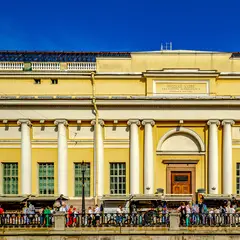
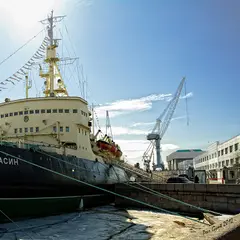
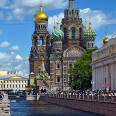
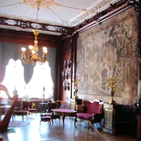
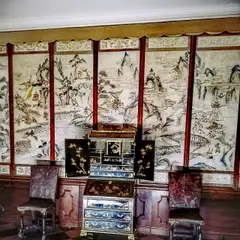
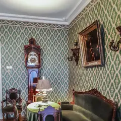
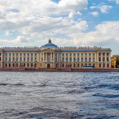
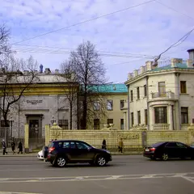
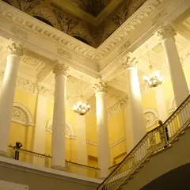

Подборку собрали 21 октября, прошедшие события скрыты. Свежая афиша — на главной
Места по типу · данные на 19 октября
Музеи Петербурга: куда сходить
43 места: музеи, галереи и выставочные залы — например, «Зоологический музей», «Корпус Бенуа Русского музея» и «Кунсткамера». 41 место с недорогим входом, примерно до 1 500 ₽. Внизу — 11 выставок, которые идут сейчас или скоро откроются.
- 43 места
- 28 планов
- 4 района
Музеи и галереи 40 из 43
Биржевая площадь, 2
Новое
Скелеты китов, мамонтёнок и тысячи чучел зверей: удивительно интересно в любом возрасте.
Подробнее и маршрут: Зоологический музейПозвать сюда: Зоологический музей
Фото: Александр Сигачёв, CC BY-SA 4.0 · Wikimedia Commons

Инженерная ул., 2-4
Новое
Русский XX век: Малевич, Петров-Водкин, Кандинский и крупные временные проекты в отдельном здании.
Подробнее и маршрут: Корпус Бенуа Русского музеяПозвать сюда: Корпус Бенуа Русского музея
Фото: Никонико962, CC BY-SA 4.0 · Wikimedia Commons
Университетская наб., 3
Новое
Первый музей России: заспиртованные диковины Петра I и этнография со всех континентов.
Подробнее и маршрут: КунсткамераПозвать сюда: Кунсткамера
Фото: Никонико962, CC BY-SA 4.0 · Wikimedia Commons

наб. Лейтенанта Шмидта, 23
Новое
Ледокол 1916 года у набережной: капитанская рубка, машинное отделение и арктическая история.
Подробнее и маршрут: Ледокол «Красин»Позвать сюда: Ледокол «Красин»
Фото: Andrey Korchagin, CC BY-SA 2.0 · Wikimedia Commons
Литейный пр., 53В
Новое
Квартира поэта во флигеле Шереметевского дворца, тихий сад и вечера поэзии в атмосфере эпохи.
Подробнее и маршрут: Музей Анны Ахматовой в Фонтанном домеПозвать сюда: Музей Анны Ахматовой в Фонтанном доме
Фото: MilanSPb, CC BY-SA 4.0 · Wikimedia Commons
ул. Рубинштейна, 23
Новое
Квартира Сергея Довлатова на Рубинштейна: история писателя и Ленинграда 70-х в одном доме.
Подробнее и маршрут: Музей ДовлатоваПозвать сюда: Музей Довлатова
Фото: Kommunalka1912, CC BY-SA 4.0 · Wikimedia Commons
Библиотечный пер., 4к2
Новое
Огромный ангар у Балтийского вокзала с паровозами, вагонами и тепловозами, в которые можно зайти.
Подробнее и маршрут: Музей железных дорог РоссииПозвать сюда: Музей железных дорог России
Фото: Анастасия Юрьевна Львова, CC BY-SA 4.0 · Wikimedia Commons
Большая Морская ул., 47
Новое
Родовой особняк писателя на Большой Морской: коллекция бабочек, семейная история и небольшие выставки.
Подробнее и маршрут: Музей НабоковаПозвать сюда: Музей Набокова
Фото: Vadim Zhivotovsky, CC BY 3.0 · Wikimedia Commons
наб. реки Фонтанки, 21
Новое
Императорские пасхальные яйца и ювелирка в Шуваловском дворце — красиво, нарядно и не слишком долго.
Подробнее и маршрут: Музей ФабержеПозвать сюда: Музей Фаберже
Фото: GAlexandrova, CC BY-SA 4.0 · Wikimedia Commons
Соляной пер., 15
Новое
Музей прикладного искусства со стеклянным куполом Большого зала — одно из самых красивых пространств.
Подробнее и маршрут: Музей ШтиглицаПозвать сюда: Музей Штиглица
Фото: Lion10~commonswiki, CC BY-SA 4.0 · Wikimedia Commons
наб. реки Мойки, 12
Новое
Последняя квартира поэта у Конюшенной: кабинет, библиотека и история последней дуэли.
Подробнее и маршрут: Музей-квартира ПушкинаПозвать сюда: Музей-квартира Пушкина
Фото: Alexander Ardatov, CC BY 3.0 · Wikimedia Commons

наб. канала Грибоедова, 2Б
Новое
Храм-музей, полностью покрытый мозаикой изнутри, — одна из самых ярких точек центра.
Подробнее и маршрут: Спас на КровиПозвать сюда: Спас на Крови
Фото: Рустам Абдрахимов, CC BY 3.0 · Wikimedia Commons
Дворцовая площадь, 2
Новое
Парадные залы Зимнего дворца, Рембрандт и Леонардо: можно ходить годами и каждый раз находить новый зал.
Подробнее и маршрут: Эрмитаж — Зимний дворецПозвать сюда: Эрмитаж — Зимний дворец
Фото: Никонико962, CC BY-SA 4.0 · Wikimedia Commons

наб. реки Мойки, 94
Новое
Дворец князей Юсуповых с домашним театром и историей убийства Распутина в подвальных комнатах.
Подробнее и маршрут: Юсуповский дворецПозвать сюда: Юсуповский дворец
Фото: Jim Gateley, CC BY 3.0 · Wikimedia Commons

Университетская наб., 15
Новое
Первый каменный дворец города с изразцовыми комнатами эпохи Петра на Университетской набережной.
Подробнее и маршрут: Дворец МеншиковаПозвать сюда: Дворец Меншикова
Фото: Александровы АГ, CC BY-SA 4.0 · Wikimedia Commons
Исаакиевская площадь, 4
Новое
Огромный собор с мозаиками и малахитом; подъём на колоннаду дарит один из лучших видов на центр.
Подробнее и маршрут: Исаакиевский соборПозвать сюда: Исаакиевский собор
Фото: Antonoff.photo, CC BY-SA 4.0 · Wikimedia Commons

Кузнечный пер., 5
Новое
Последняя квартира писателя, где написаны «Братья Карамазовы», а рядом Кузнечный рынок и Владимирская.
Подробнее и маршрут: Литературно-мемориальный музей ДостоевскогоПозвать сюда: Литературно-мемориальный музей Достоевского
Фото: Александровы АГ, CC BY-SA 4.0 · Wikimedia Commons
Садовая ул., 2
Новое
Красный замок Павла I с мрачной историей, парадными покоями и выставками Русского музея.
Подробнее и маршрут: Михайловский (Инженерный) замокПозвать сюда: Михайловский (Инженерный) замок
Фото: Никонико962, CC BY-SA 4.0 · Wikimedia Commons

Университетская наб., 17
Новое
Слепки античных скульптур, модели соборов и работы выпускников в здании у сфинксов.
Подробнее и маршрут: Музей Академии художествПозвать сюда: Музей Академии художеств
Фото: Никонико962, CC BY-SA 4.0 · Wikimedia Commons

ул. Куйбышева, 2-4
Новое
Особняк Кшесинской в стиле модерн: интерьеры балерины и выставки о XX веке.
Подробнее и маршрут: Музей политической истории РоссииПозвать сюда: Музей политической истории России
Фото: GAlexandrova, CC BY-SA 4.0 · Wikimedia Commons

Инженерная ул., 2-4Д
Новое
Главное собрание русского искусства: от икон и Брюллова до Репина и «Последнего дня Помпеи».
Подробнее и маршрут: Русский музей — Михайловский дворецПозвать сюда: Русский музей — Михайловский дворец
Фото: Артём Светлов, CC BY 4.0 · Wikimedia Commons
Невский пр., 17
Новое
Барочный дворец Растрелли прямо на Невском: восстановленные интерьеры и камерные экспозиции.
Подробнее и маршрут: Строгановский дворецПозвать сюда: Строгановский дворец
Фото: GAlexandrova, CC BY-SA 4.0 · Wikimedia Commons
Шпалерная ул., 26
Новое
Интерактивный музей, где гиды общаются жестами, а гости — без слов; есть формат «свидания в тишине» с мастер-классом.
Дворцовая площадь, 6-8
Новое
Импрессионисты, Матисс и Пикассо в светлых анфиладах под стеклянными крышами, плюс большие сменные выставки.
Подробнее и маршрут: Главный штаб ЭрмитажаПозвать сюда: Главный штаб Эрмитажа
Литейный пр., 58
Новое
Камерная галерея на Литейном, где давно показывают независимых петербургских художников.
Подробнее и маршрут: Арт-центр «Борей»Позвать сюда: Арт-центр «Борей»
ул. Жуковского, 28
Новое
Одна из главных галерей современного искусства в городе: смелые проекты молодых художников.
Подробнее и маршрут: Галерея Anna NovaПозвать сюда: Галерея Anna Nova
Цветочная ул., 16Л
Новое
Огромный макет страны с движущимися поездами и машинами, где по кругу сменяются день и ночь.
Подробнее и маршрут: Гранд Макет РоссияПозвать сюда: Гранд Макет Россия
Исаакиевская площадь, 1
Новое
Огромный зал у Исаакия с самыми громкими выставками сезона: от классики до медиаискусства.
ул. Короленко, 14
Новое
Квартира поэта в доме Мурузи; вход через книжный и кофейню, есть лекции и вечера чтений.
Подробнее и маршрут: Музей Бродского «Полторы комнаты»Позвать сюда: Музей Бродского «Полторы комнаты»
Конюшенная площадь, 2В
Новое
Работающие автоматы из СССР: «Морской бой», «Городки», газировка — азартно и ностальгично, каждый день до 21:00.
Подробнее и маршрут: Музей советских игровых автоматовПозвать сюда: Музей советских игровых автоматов
наб. Макарова, 10
Новое
Квартира художника с видом на Неву, выход на крышу мастерской и работы мастера и его учеников.
Подробнее и маршрут: Музей-квартира КуинджиПозвать сюда: Музей-квартира Куинджи
Большая Морская ул., 35
Новое
Музей фотографии с выставками российских и зарубежных авторов и интерактивными залами.
площадь Труда, 5
Новое
Огромный морской музей в Крюковых казармах: модели кораблей, оружие и история флота.
Подробнее и маршрут: Центральный военно-морской музейПозвать сюда: Центральный военно-морской музей
29-я линия В.О., 2
Новое
Несколько этажей современного российского искусства, сменные выставки и ресторан — легко провести весь вечер.
наб. реки Фонтанки, 24
Новое
Галерея в старинном особняке: живопись XX века, ленинградское искусство и коллекционные выставки.
наб. реки Фонтанки, 121
Новое
Галерея современного искусства в старом доме на Фонтанке: персональные выставки сильных авторов.
Подробнее и маршрут: Галерея Марины ГисичПозвать сюда: Галерея Марины Гисич
наб. канала Грибоедова, 103
Новое
Музей петербургского искусства прошлого века и наших дней с регулярно обновляемыми выставками.
Подробнее и маршрут: МИСП — Музей искусства Санкт-Петербурга XX–XXI вековПозвать сюда: МИСП — Музей искусства Санкт-Петербурга XX–XXI веков
Миллионная ул., 5
Новое
Дворец, облицованный камнем, где Русский музей показывает выставки о театре, портрете и современном искусстве.
Подробнее и маршрут: Мраморный дворецПозвать сюда: Мраморный дворец
ул. Марата, 24А
Новое
Полярный музей в бывшей церкви: дрейфующие станции, ледоколы и экспедиции — необычно и атмосферно.
Подробнее и маршрут: Музей Арктики и АнтарктикиПозвать сюда: Музей Арктики и Антарктики
Съезжинская ул., 37
Новое
Молодой музей обэриутов в бывшей квартире Введенского на Петроградке: абсурд, юмор и поэзия.


Готовые планы с этими местами 12 из 28
- Музей Анны Ахматовой в Фонтанном доме · Музей · м. Маяковская
- 6 минут пешкомSalone Pasta&Bar · Итальянский ресторан
Квартира Ахматовой во флигеле Фонтанного дома и тихий сад за ним, а потом 6 минут пешком вдоль Фонтанки — свежая паста без лишней торжественности.
Открыть план: Ахматова и паста на ФонтанкеПозвать сюда: Ахматова и паста на Фонтанке
Фото: MilanSPb, CC BY-SA 4.0 · Wikimedia Commons
- Музей Набокова · Музей · м. Адмиралтейская
- 1 минута пешкомTeplo · Кафе
Коллекция бабочек в родовом особняке писателя на Большой Морской, а через дорогу — кафе-квартира с диванами и пледами.
Открыть план: Бабочки Набокова и кафе-квартираПозвать сюда: Бабочки Набокова и кафе-квартира
Фото: Vadim Zhivotovsky, CC BY 3.0 · Wikimedia Commons
- Юсуповский дворец · Музей · м. Садовая
- 4 минуты пешкомЕМ · Ресторан
Домашний театр князей и подвальные комнаты, где убили Распутина, а потом 4 минуты пешком по Мойке — ужин из многих перемен в «ЕМ».
Открыть план: Дворец Юсуповых и ужин-сет на МойкеПозвать сюда: Дворец Юсуповых и ужин-сет на Мойке
Фото: Jim Gateley, CC BY 3.0 · Wikimedia Commons
- Музей-квартира Пушкина · Музей · м. Адмиралтейская
- 3 минуты пешкомЧАО Какао · Какаочная
Кабинет и библиотека поэта у Конюшенной, а потом пара минут пешком — какаочная, где наливают густой горячий шоколад из окошка.
Открыть план: Квартира Пушкина и горячий шоколадПозвать сюда: Квартира Пушкина и горячий шоколад
Фото: Alexander Ardatov, CC BY 3.0 · Wikimedia Commons
- Кунсткамера · Музей · м. Адмиралтейская
- 3 минуты пешкомЗоологический музей · Музей
- 12 минут пешкомProbka · Ресторан
Петровские диковины в первом музее России, потом скелеты китов и мамонтёнок в соседнем Зоологическом, а ужинать — через мост, в Probka.
Открыть план: Кунсткамера, киты и пастаПозвать сюда: Кунсткамера, киты и паста
Фото: Никонико962, CC BY-SA 4.0 · Wikimedia Commons
- Музей Довлатова · Музей · м. Достоевская
- 5 минут пешкомDuo Asia · Паназиатский ресторан
Квартира Сергея Довлатова и Ленинград 70-х в одном доме, а потом прогулка по Рубинштейна до Duo Asia — 5 минут пешком.
Открыть план: Ленинград Довлатова и ужин на РубинштейнаПозвать сюда: Ленинград Довлатова и ужин на Рубинштейна
Фото: Kommunalka1912, CC BY-SA 4.0 · Wikimedia Commons
- Корпус Бенуа Русского музея · Музей · м. Невский проспект
- 1 минута пешкомКафе Бенуа · Кафе
Русский XX век в корпусе Бенуа — Малевич, Петров-Водкин, Кандинский, — а потом красивые десерты в кафе прямо в колонном зале музея.
Открыть план: Малевич и десерты в колонном залеПозвать сюда: Малевич и десерты в колонном зале
Фото: Никонико962, CC BY-SA 4.0 · Wikimedia Commons
- Спас на Крови · Музей · м. Невский проспект
- 5 минут пешкомDaiquiri · Коктейльный бар
Храм, покрытый мозаикой изнутри, пока он открыт, а потом 5 минут пешком — ночной бар с десятками вариаций дайкири до четырёх утра.
Открыть план: Спас на Крови и ночь дайкириПозвать сюда: Спас на Крови и ночь дайкири
Фото: Рустам Абдрахимов, CC BY 3.0 · Wikimedia Commons
- Музей Штиглица · Музей · м. Чернышевская
- 6 минут пешкомFrameis · Кафе-пекарня
Большой зал под стеклянным куполом — одно из самых красивых пространств города, — а потом 6 минут пешком — кафе на Моховой с собственной выпечкой.
Открыть план: Стеклянный купол Штиглица и булочка дняПозвать сюда: Стеклянный купол Штиглица и булочка дня
Фото: Lion10~commonswiki, CC BY-SA 4.0 · Wikimedia Commons
- Музей Фаберже · Музей · м. Гостиный двор
- 6 минут пешкомПалкинъ · Ресторан
Императорские пасхальные яйца в Шуваловском дворце, а через 6 минут пешком — парадные залы ресторана с дореволюционной историей на углу Невского.
Открыть план: Фаберже и «Палкинъ»Позвать сюда: Фаберже и «Палкинъ»
Фото: GAlexandrova, CC BY-SA 4.0 · Wikimedia Commons
- Эрмитаж — Зимний дворец · Музей · м. Адмиралтейская
- 5 минут пешкомBellevue · Ресторан
Парадные залы Зимнего дворца, пока не устали ноги, а потом 5 минут пешком — ужин на верхнем этаже отеля у Дворцовой с панорамой крыш и соборов.
Открыть план: Эрмитаж и ужин над крышамиПозвать сюда: Эрмитаж и ужин над крышами
Фото: Никонико962, CC BY-SA 4.0 · Wikimedia Commons
- Ледокол «Красин» · Музей-корабль · м. Горный институт
Капитанская рубка, машинное отделение и арктическая история на ледоколе 1916 года у набережной.
Открыть план: Ледокол «Красин»Позвать сюда: Ледокол «Красин»
Фото: Andrey Korchagin, CC BY-SA 2.0 · Wikimedia Commons
Выставки сейчас 11
Центр современного искусства им. Сергея Курёхина · м. Горный институт
Юбилейный, десятый фестиваль уличного искусства: больше тридцати стрит-артистов переносят свои работы в залы Центра Курёхина. В программе есть лекции о граффити.
Подробнее: Арт-Стена. СуперноваПозвать сюда: Арт-Стена. СуперноваБилеты : Арт-Стена. Супернова (страница с билетами, откроется в новой вкладке)
Музей «Эрарта» · м. Горный институт · 1 500–2 950 ₽
Итальянский фэшн-фотограф, четверть века работавший с Vogue Italia: портреты звёзд, моделей и дизайнеров эпохи большой моды. Легко и красиво смотреть с подругами.
Подробнее: Бардо Фабиани. Память о прекрасном прошломПозвать сюда: Бардо Фабиани. Память о прекрасном прошломБилеты : Бардо Фабиани. Память о прекрасном прошлом (страница с билетами, откроется в новой вкладке)
Эрмитаж, Главный музейный комплекс · м. Адмиралтейская
Шёлковые придворные халаты, портреты цинских полководцев и воссозданный кабинет китайского учёного в Гербовом зале. Выставка работает до 22 ноября — успейте.
Подробнее: Императорский Китай. Династия Цин (1644–1911)Позвать сюда: Императорский Китай. Династия Цин (1644–1911)Билеты : Императорский Китай. Династия Цин (1644–1911) (страница с билетами, откроется в новой вкладке)
РОСФОТО · м. Адмиралтейская · 0+
Нижний Новгород 1896-го на старинных снимках: павильоны большой Всероссийской выставки, электрическая дорога и воздухоплавательный парк. Тихий музей рядом с Исаакием.
Подробнее: Россия 1896. К юбилею Нижегородской промышленной и художественной выставкиПозвать сюда: Россия 1896. К юбилею Нижегородской промышленной и художественной выставкиБилеты : Россия 1896. К юбилею Нижегородской промышленной и художественной выставки (страница с билетами, откроется в новой вкладке)
Эрмитаж, Главный штаб · м. Адмиралтейская
Полузабытый художник, проживший жизнь между Россией и Францией: картины из частного фонда в залах Главного штаба. Удобно совместить с импрессионистами в том же здании.
Подробнее: Русский парижанин Константин КузнецовПозвать сюда: Русский парижанин Константин КузнецовБилеты : Русский парижанин Константин Кузнецов (страница с билетами, откроется в новой вкладке)
Манеж · м. Адмиралтейская · 100–800 ₽ · 12+
Тысяча с лишним экспонатов из 98 собраний страны: шаляпинский наряд царя Бориса, кусок занавеса Боровского с таганковского «Гамлета» и головинский занавес «Маскарада».
Подробнее: Сцена действияПозвать сюда: Сцена действияБилеты : Сцена действия (страница с билетами, откроется в новой вкладке)
Музей «Эрарта» · м. Горный институт · 1 500–2 950 ₽
Кастомные «харлеи», архивные фото и истории владельцев: каждый байк тут — портрет хозяина. Отличный повод привести в музей тех, кто в музеи обычно не ходит.
Подробнее: Harley-Davidson. Дух свободыПозвать сюда: Harley-Davidson. Дух свободыБилеты : Harley-Davidson. Дух свободы (страница с билетами, откроется в новой вкладке)
Эрмитаж, Главный музейный комплекс · м. Адмиралтейская
Эскизы, по которым швейцарские мастера собирали цветные окна для ратуш и домов. Тонкая графика в небольшой галерее — приятная пауза после парадных залов.
Подробнее: Линии света. Швейцарские рисунки для витражей XVI–XVII вековПозвать сюда: Линии света. Швейцарские рисунки для витражей XVI–XVII вековБилеты : Линии света. Швейцарские рисунки для витражей XVI–XVII веков (страница с билетами, откроется в новой вкладке)
Эрмитаж, Главный музейный комплекс · м. Адмиралтейская
Главная выставка сезона в Эрмитаже: античная скульптура и барочные образы Вечного города сведены в одну большую прогулку по Риму. Закладывайте пару часов.
Подробнее: Urbi et Orbi. Рим барочный и Рим античныйПозвать сюда: Urbi et Orbi. Рим барочный и Рим античныйБилеты : Urbi et Orbi. Рим барочный и Рим античный (страница с билетами, откроется в новой вкладке)
Эрмитаж, Главный музейный комплекс · м. Адмиралтейская
Больше сотни голландских картин, чьих авторов хранители Эрмитажа выяснили за годы исследований и реставрации. Центр экспозиции — знаменитый Рембрандт.
Подробнее: Новая Голландия. Прославленные и забытые художники XVII векаПозвать сюда: Новая Голландия. Прославленные и забытые художники XVII векаБилеты : Новая Голландия. Прославленные и забытые художники XVII века (страница с билетами, откроется в новой вкладке)
Эрмитаж, Главный штаб · м. Адмиралтейская
Искусство XX века из Европы и США — от парижской богемы до послевоенных десятилетий. Новый большой проект в Главном штабе для зимнего свидания в музее.
Подробнее: От богемы к вечности: европейское и американское изобразительное искусство. 1900–1970Позвать сюда: От богемы к вечности: европейское и американское изобразительное искусство. 1900–1970Билеты : От богемы к вечности: европейское и американское изобразительное искусство. 1900–1970 (страница с билетами, откроется в новой вкладке)
Как позвать
- Выбери план, место или событие — в карточке адрес, цены и маршрут в Яндекс Картах.
- Нажми «Позвать сюда» — соберётся приглашение-игра для свидания или голосование для компании.
- Отправь ссылку в любой мессенджер: тебе ответят, а компания отметит, куда и когда может. Бесплатно и без регистрации.